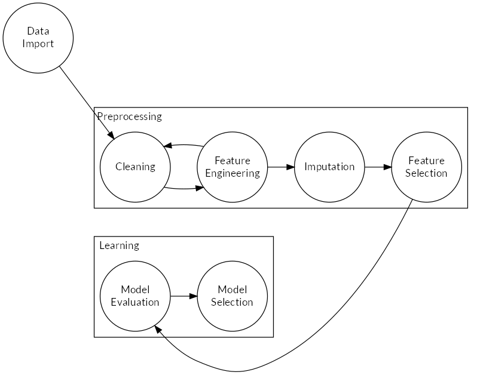

2 Experimental Setup and Methods
The general workflow with which the problem was solved is shown in Figure 2.1.

Figure 2.1: Implemented workflow. During import, data was type-cast to usable types. During preprocessing, input errors were corrected, binary features recoded, missing values correclty coded for each feature and categorical data processed manually where necessary. During feature engineering, redundant features were dropped, date features converted to time differences and geographical information acquired to visualize locations of examples.